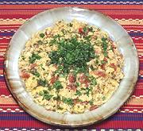

|
Eggs PericoColombia - Huevos Perico | ||||
| Serves: Effort: Sched: DoAhead: |
3 break ** 20 min Part |
A very fine and flavorful breakfast dish of scrambled eggs and vegetables. The name means Parakeet Eggs (reason unknown). | |||
|
10 1/2 1/4 2/3 2 ----- ar ----- ar |
lrg t t c T --- --- |
Eggs Salt Pepper Hogao (1) Olive Oil ExtV -- Garnish Cilantro -- Serve with Hot Sauce (2) |
Do-Ahead - (50 min)
|